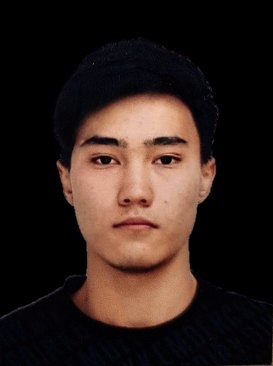

Amirov Arlan

My contacts
- Phone number: +77081332715
- E-mail: arlan.amirov.2015@mail.ru
- Telegram: @my4kish
About me
I'm 19 years old. At the moment I'm a 3rd year student of the specialty "Computer engineering and software". Before that, I did not participate in any programming courses. From this course I want to gain an understanding of the principles of building web applications and their architectural features. I am also looking forward to working on real projects to consolidate theoretical knowledge and develop practical skills.
Skills
- HTML, CSS
- JS, C++, C#, Python
- MS SQL
- Git/GitHub
- Cisco Packet Tracer
- Photoshop, Figma, Blender 3D
Code example
std::string spinWords(const std::string &str)
{
using namespace std;
string str1 = str;
int count = 0;
int start = 0;
int end = 0;
int temp, n, m;
for (int i = 0; i < str1.length(); i++) {
count++;
if (count == 1) { start = i; }
if (str1[i] == ' ') {
count--;
end = i - 1;
if (count >= 5) {
for (n = start, m = end; n < m; n++, m--) {
temp = str1[n];
str1[n] = str1[m];
str1[m] = temp;
}
}
count = 0;
}
if (i == str1.length() - 1) {
end = i;
if (count >= 5) {
for (n = start, m = end; n < m; n++, m--) {
temp = str1[n];
str1[n] = str1[m];
str1[m] = temp;
}
count = 0;
}
}
}
return str1;
}// spinWords
Experience
Intern ITS (Information Technology Service) JSC «Transtelecom» Karaganda
Education
University: Abylkas Saginov Karaganda Technical University
Computer engineering and software (3 course)
Languages
- Kazakh (My native lang)
- Russian
- English: B1 Intermediate - B2 Upper Intermediate (according to the online test at EFSET)